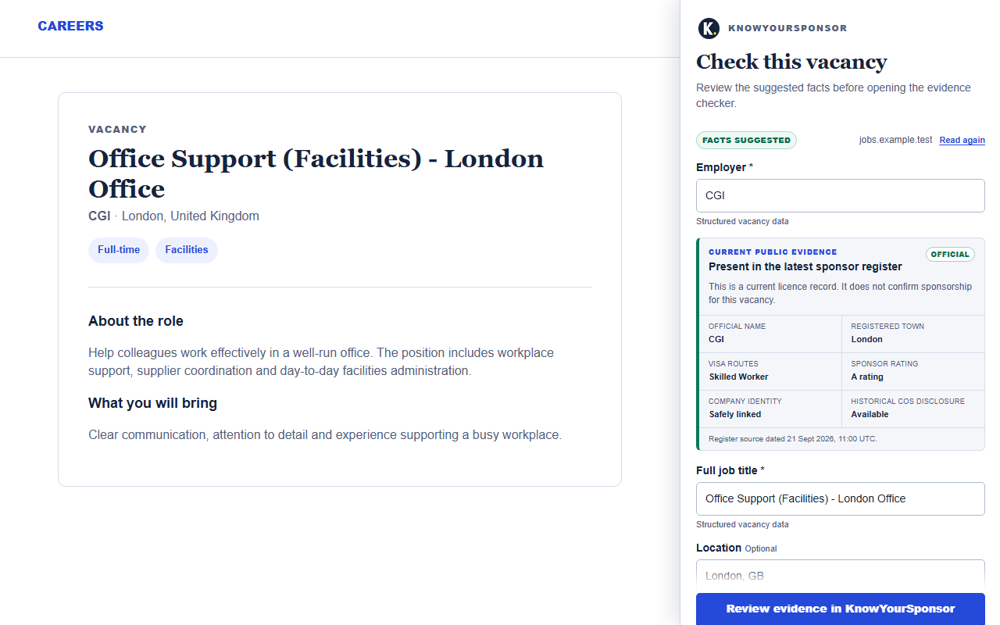
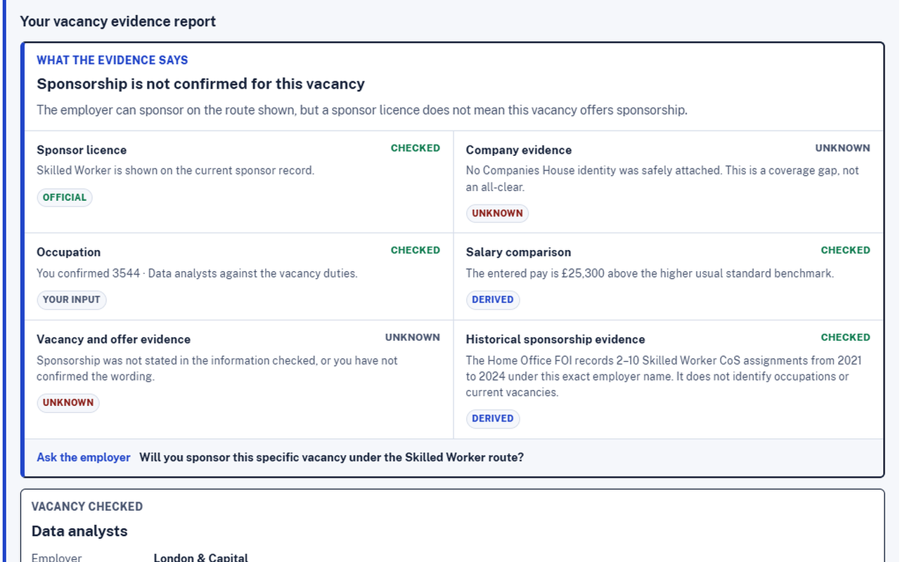

It reads the current tab only after you choose the extension.
Free Chrome extension
Check a vacancy without retyping it.
Open a public job advert, click the extension and review the suggested employer, role, location and salary before opening the evidence checker.
Runs only when you click it. No permanent access to job websites and no browsing-history collection.
Review before continuingNothing sent automatically

Suggested details remain editable; weak or missing facts stay visible.
A register match is never presented as proof that a vacancy offers sponsorship.
Three clear steps
From vacancy advert to evidence review
The shortcut removes copying and retyping. It does not remove your review or make a sponsorship decision for you.
Open the public advert
Visit the vacancy page you want to assess, then choose Check with KnowYourSponsor from Chrome.
Review every suggestion
Confirm or edit the employer, full job title, location and pay. Empty fields remain empty rather than being guessed.
Open dated evidence
Continue to KnowYourSponsor to compare the vacancy with the current sponsor register and role evidence.
Know what it can prove
A faster route to the same careful evidence
What it helps with
- Transfers reviewable vacancy facts without repeated typing.
- Previews whether a named employer appears in the current register.
- Keeps the source date and unresolved questions visible.
- Opens the full checker for occupation and salary evidence.
What it does not establish
- That the vacancy definitely offers sponsorship.
- That an employer will sponsor a particular applicant.
- The correct occupation code when the advert is vague.
- Eligibility or immigration advice.
See the workflow
No hidden automatic decision
The interface shows both the extracted vacancy details and the evidence limitations before you continue.

Optional shortcut
Spend less time copying. Keep the review.
Install the extension for public vacancy pages, or continue using the web checker directly. Both routes keep suggested facts and confirmed evidence separate.